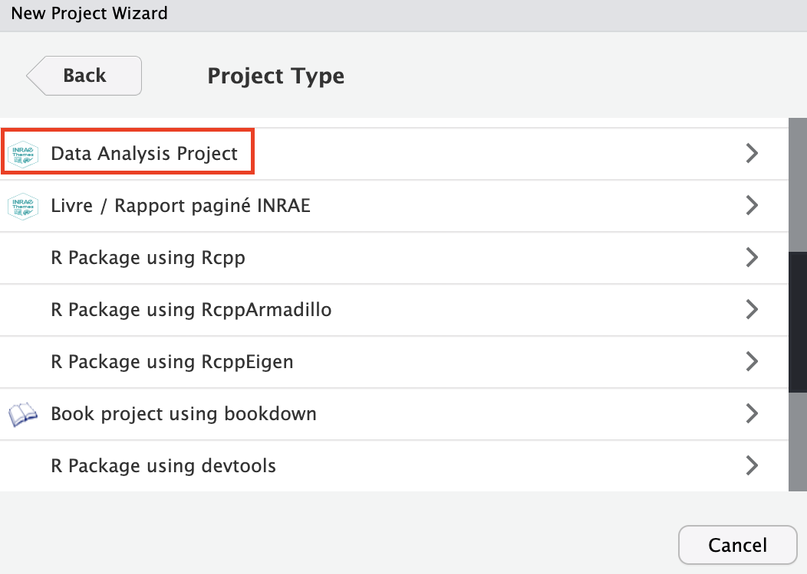
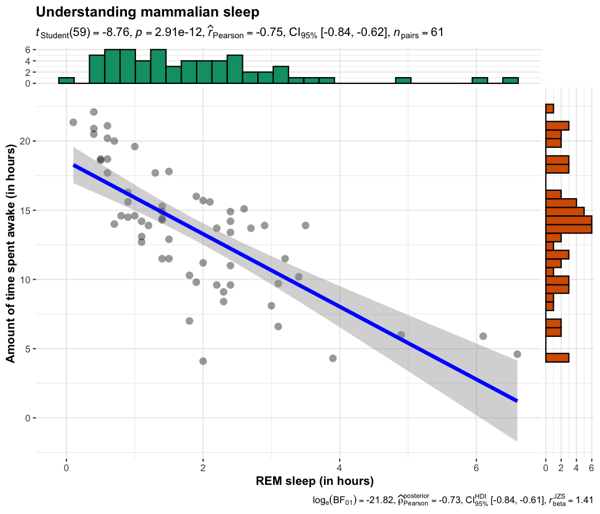
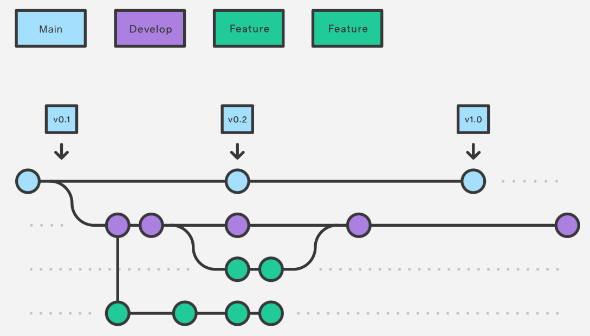
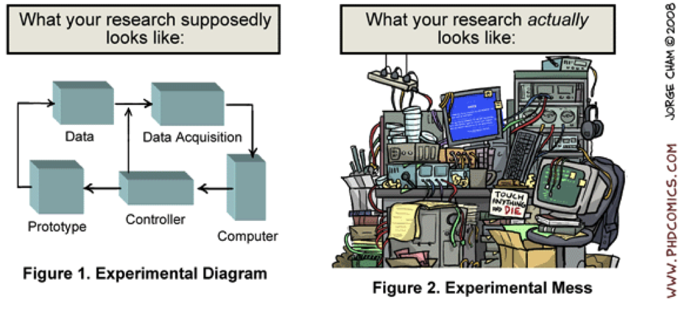

Bulle d’R : Bonnes pratiques à ETTIS
![]()
28 mai 2024
Préambule : Version de R
Les packages R peuvent dépendre d’une version spécifique de R (ou version minimale)

Les nouvelles versions de R peuvent apporter des corrections, éliminer les bugs… Il est donc intéressant de faire les MAJ “majeures” de printemps : 4.2.x \(\rightarrow\) 4.3.x
Les Breaking Changes
Certaines versions de R apportent des breaking changes qui peuvent casser le fonctionnement de code fonctionnant sur des versions précédentes (ex : stringAsFactor = FALSE au lieu de TRUE avant la version 4.0).
A l’inverse, des nouvelles fonctionnalités ne vont marcher que sur des versions récentes (ex : le pipe |> à partir de R 4.1.0)
Quelques mises en garde
- Les fonctions provenant de packages tels que ceux du
tidyverseproposent énormément de fonctionnalités pratiques, utiles, fonctionnelles par rapport aux fonctionnalités classiques de R - MAIS elles ont un cycle de développement très dynamique pouvant mener à des fonctions rapidement
deprecatedousuperseded

Si on n’est pas à l’aise avec l’écriture de codes…
Il existe des alternatives ‘clic-bouton’ :
le package/addin {esquisse} pour créer des graphiques en ggplot

le package {Factoshiny} pour améliorer facilement et de façon interactive les graphiques issus d’analyses factorielles (ACP, ACM, AFM, etc.) pour les rendre beaucoup plus lisibles
{R Commander}, une interface utilisateur graphique (GUI)
Besoin d’examiner rapidement vos données dans Excel ?
Utilisez l’addin viewxl pour exporter interactivement des data frame de l’environnement global vers Excel


Exporter les graphiques
Directement via l’onglet ‘Plots’ Cliquer sur ‘Export’ qui donne accès à trois options différentes :
- save as image
- save as PDF
- copy to clipboard
Dans un script, avec les fonctions
jpeg(),png(),bmp()outiff()oupdf()du package {grDevices}
- On préfèrera utiliser la fonction
ggsavedu package {ggplot2}
Créer un projet sous RStudio
À partir de l’icône dédiée en haut à droite de RStudio

Créer un projet sous RStudio
Sélectionner l’option “New project”, puis l’option “New Directory” et enfin “Empty Project”


Coup de pouce : Le package {InraeThemes}
# install.packages("remotes")
remotes::install_github("davidcarayon/InraeThemes")
InraeThemes::new_analysis()

Explorer les données manquantes avec la fonction vis_miss() du package {visdat}

{tidymodels} : le tidyverse de la modélisation
- Propose une interface unifiée à tous les types de modèles (
lm,glm,randomForests,xgboost, etc.)

{ggstatsplot} : combiner statistiques et représentations graphiques


Analyses factorielles
Deux grandes écoles


Quarto
- Quarto est le successeur de Rmarkdown qui se veut plus généraliste et polyglotte
- ⚠️ Rmarkdown n’est pas mort pour autant !


Renv : Figer ses versions de packages R
Sans {renv}

Les packages sont communs pour tous les projets
Avec {renv}

Le projet 1 peut utiliser dplyr 1.0.2 et le projet 2 dplyr 0.8.2
Git & Gitlab/Hub


Pourquoi utiliser Git ?
Garder en mémoire chaque modification de chaque fichier, pourquoi elle a eu lieu, quand et par qui
Faciliter le développement collaboratif : fusion des différentes modifications
Revenir aux versions précédentes (+ sauvegarde du travail)
Déployer son travail en ligne (Pages)
Shiny : Des application web
Shiny est un package R qui permet de développer facilement des applications web interactives dans une syntaxe R très simple (pouvant être complétée par du HTML / CSS / JS pour les applications les plus abouties).
Outil principalement utilisé pour l’analyse et la visualisation de données, ou encore la mise à disposition de code R “complexe” en presse-bouton
Excellent outil de valorisation et diffusion des résultats de recherche

Ne soyons pas trop exigeants…
 
Slides made with …


Comment ça fonctionne ?
Cf. Présentation TWIX “Travailler sous R avec RStudio. Comment ça marche ?” disponible à ce lien :
https://statire.github.io/bulledr/00-TWIX/TWIX_2023_06_01